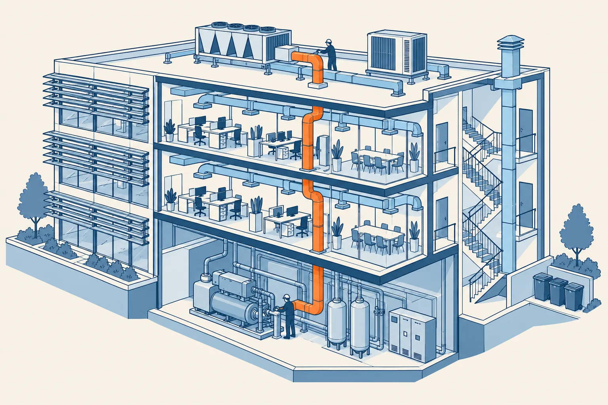

Clim'Études Sud · BTS · TP TECVC · Mon carnet du chargé d’affaires
P4 · Le bâtiment qui protège
Semaines 23 à 28 · 10 missions · environ 4 h 10
Le lot CVC traverse les murs coupe-feu et participe au désenfumage : l'incendie s'étudie une fois le bâtiment compris.
P1Arriver en sécurité
sem. 1 à 6
P2Le fluide et la machine
sem. 7 à 14
P3Le bâtiment qui consomme
sem. 15 à 22
P4Le bâtiment qui protège
sem. 23 à 28
P5L'affaire complète
sem. 29 à 36
Une mission = une feuille recto-verso. Scannez le QR, faites la station, remplissez la feuille, faites signer le tampon par le professeur.
Carnet d’une période (le carnet complet regroupe les cinq périodes)
inerWeb · Législation · Clim’Études Sudpériode P4
Ma carte des tampons · P4
IncendieCertificat
33 · Classer le bâti
Tampon · date
34 · Euroclasses
Tampon · date
35 · Le désenfumage
Tampon · date
36 · Clapets coupe-feu
Tampon · date
38 · Sprinkler & RIA
Tampon · date
Certifications & normesCertificat
39 · Loi, norme ou DTU ?
Tampon · date
40 · Le marquage CE
Tampon · date
41 · RGE & QualiPAC
Tampon · date
42 · Les garanties
Tampon · date
Le professeur tamponne la case après la mission
inerWeb · Législation · Clim’Études Sudcarte P4
Mission 33/57 · IncendieP4 · sem. 23 à 28 · 25 min
Mission : Quel régime pour chaque partie du bâtiment ?
Le clientUn promoteur qui transforme un ancien entrepôt en bâtiment mixte : agence bancaire au rez-de-chaussée, plateaux de bureaux, logements aux étages.
La situationLe promoteur prépare son dossier de permis de construire et vous demande, avant de chiffrer le lot chauffage, ventilation et climatisation, « quelles règles incendie s'appliquent ». Le rez-de-chaussée accueillera des clients, les étages intermédiaires des salariés d'une seule société sans aucun public, et le dernier niveau des logements. Personne n'a encore mesuré à quelle hauteur se trouvera le plancher bas du dernier niveau. Votre responsable veut savoir ce qu'il faut demander au maître d'ouvrage avant d'aller plus loin.
La pièce à produireUne note d'une page au chargé d'affaires : pour chacune des trois parties (agence, bureaux sans public, logements), le régime applicable et le texte à lire ; les deux informations à demander au promoteur (effectif et hauteur du plancher bas du dernier niveau) ; trois conséquences à anticiper pour le lot CVC.
Ma pièce : brouillon ici, feuille jointe si nécessaire
Je travaille : CP7 ventilation tertiaire · CP1 plans d’implantation
Tampon du professeur
Date : ______________
Tampon à gagnerBon classement
25 min · 3 bonnes réponses sur 4
TP TECVC : CP7 · CP1
inerWeb · Législation · Clim’Études Sudmission 33/57 · recto
Mission 33/57 · IncendieP4 · sem. 23 à 28 · 25 min
Questions et défi · Mission : Quel régime pour chaque partie du bâtiment ?
1Une agence bancaire reçoit des clients dans ses locaux. Comment est-elle classée ? (source à retrouver)
2Un ERP peut accueillir 650 personnes, public et personnel compris. Quelle est sa catégorie ? (source à retrouver)
3Un immeuble de bureaux a son plancher bas du dernier niveau à 35 m au-dessus du sol le plus haut utilisable par les engins de secours. Est-ce un IGH ? (source à retrouver)
4Un plateau de bureaux de 400 m², sans public, dans un bâtiment ordinaire : le désenfumage est-il obligatoire ? (source à retrouver)
Défi · RelierReliez chaque bâtiment au régime dont il relève, puis dites en une phrase ce qui décide.
- Une agence de banque ouverte à la clientèle
- Un plateau de bureaux où ne travaillent que des salariés
- Un immeuble de bureaux dont le plancher bas du dernier niveau est à plus de 28 m
- Un immeuble d'habitation dont le plancher bas du logement le plus haut est à plus de 50 m
TP TECVC : CP7 · CP1
inerWeb · Législation · Clim’Études Sudmission 33/57 · verso
Mission 34/57 · IncendieP4 · sem. 23 à 28 · 25 min
Mission : Cette gaine et ce calfeutrement répondent-ils à la bonne question ?
Le clientLe maître d'ouvrage d'un plateau de bureaux en rénovation, représenté par son conducteur de travaux.
La situationL'entreprise du lot ventilation propose, pour un réseau de gaines qui traverse une paroi coupe-feu, un isolant dont la fiche technique, ancienne, n'indique qu'une catégorie M, et un calfeutrement de traversée dont la seule pièce fournie est une classe de réaction au feu. Le conducteur de travaux ne sait pas si ces justificatifs répondent à la bonne question. Il vous demande aussi quel texte fixe les méthodes d'évaluation de la résistance au feu pour l'autorisation de travaux qui sera déposée après le 1er octobre 2026.
La pièce à produireUne note d'une page au conducteur de travaux : pour chaque pièce (isolant de gaine, fourreau, calfeutrement), la question posée (réaction ou résistance au feu), l'étiquette à demander, et le texte de référence.
Ma pièce : brouillon ici, feuille jointe si nécessaire
Je travaille : CP7 ventilation tertiaire · CP1 plans d’implantation
Tampon du professeur
Date : ______________
Tampon à gagnerDeux questions
25 min · 3 bonnes réponses sur 4
TP TECVC : CP7 · CP1
inerWeb · Législation · Clim’Études Sudmission 34/57 · recto
Mission 34/57 · IncendieP4 · sem. 23 à 28 · 25 min
Questions et défi · Mission : Cette gaine et ce calfeutrement répondent-ils à la bonne question ?
1Une fiche de plaque annonce « A2-s1,d0 ». Que peut-on en conclure ? (source à retrouver)
2Dans « C-s2,d1 », que désigne le d1 ? (source à retrouver)
3Un élément est classé « EI 30 ». Que garantit ce classement ? (source à retrouver)
4Un fourreau traverse une paroi coupe-feu. Que demandez-vous pour justifier le calfeutrement ? (source à retrouver)
Défi · RelierReliez chaque étiquette à la question qu'elle traite (réaction ou résistance au feu), à ce qu'elle décrit (un produit ou un ouvrage) et à sa lecture, en une phrase.
TP TECVC : CP7 · CP1
inerWeb · Législation · Clim’Études Sudmission 34/57 · verso
Mission 35/57 · IncendieP4 · sem. 23 à 28 · 25 min
Mission : Le plateau de bureaux et la CTA qui ne s'arrête pas
Le clientLe gestionnaire d'un immeuble de bureaux, qui fait aménager un plateau en étage.
La situationLe gestionnaire réunit deux surfaces de bureaux au deuxième étage : le plateau atteindra 400 m², avec des fenêtres, un escalier commun et un faux plafond. La centrale de traitement d'air existante souffle dans tout le plateau. L'architecte affirme qu'« il suffit d'ouvrir les fenêtres en cas de fumée » et que la CTA peut continuer à tourner. Le gestionnaire hésite : il vous demande si un désenfumage est obligatoire, sous quelle forme, et ce que cela change pour la CTA. La demande d'autorisation d'urbanisme sera déposée en début d'année prochaine.
La pièce à produireUne note d'une page au gestionnaire : le seuil qui déclenche l'obligation et le texte de référence, le principe retenu (naturel ou mécanique) avec ce qui reviendrait au lot CVC, la conduite à tenir pour la CTA à l'ordre du système de sécurité incendie, et le texte à vérifier compte tenu de la date de dépôt.
Ma pièce : brouillon ici, feuille jointe si nécessaire
Je travaille : CP7 ventilation tertiaire · CP10 CTA
Tampon du professeur
Date : ______________
Tampon à gagnerOrdre de marche
25 min · 3 bonnes réponses sur 4
TP TECVC : CP7 · CP10
inerWeb · Législation · Clim’Études Sudmission 35/57 · recto
Mission 35/57 · IncendieP4 · sem. 23 à 28 · 25 min
Questions et défi · Mission : Le plateau de bureaux et la CTA qui ne s'arrête pas
1Un local de bureaux de 400 m² en étage : le Code du travail impose-t-il un désenfumage, et sur quel seuil ? (source à retrouver)
2Quelles tenues et quelles conditions d'installation sont exigées d'un ventilateur d'extraction de désenfumage ? (source à retrouver)
3À l'ordre de désenfumage, pourquoi le ventilateur ne démarre-t-il pas instantanément ? (source à retrouver)
4Le désenfumage d'une zone démarre : que doit faire la ventilation de confort qui la dessert ? (source à retrouver)
Défi · Vrai ou fauxVrai ou faux ? Justifiez chaque réponse en une phrase.
- Pour désenfumer un escalier encloisonné, on installe une extraction mécanique en partie haute de la cage.V F
- Le ventilateur de désenfumage doit démarrer immédiatement à l'ordre, avant que les volets aient fini de s'ouvrir.V F
- Un plateau de bureaux de 250 m² avec fenêtres, en étage, est soumis au désenfumage du seul fait de sa surface (Code du travail).V F
TP TECVC : CP7 · CP10
inerWeb · Législation · Clim’Études Sudmission 35/57 · verso
Mission 36/57 · IncendieP4 · sem. 23 à 28 · 25 min
Mission : Les gaines qui traversent les chambres
Le clientLa direction d'une clinique de quartier, établissement recevant du public, qui fait remplacer sa centrale de traitement d'air.
La situationLa nouvelle centrale de traitement d'air soufflera dans un couloir desservant plusieurs chambres. Vos gaines traversent des parois de locaux à sommeil, une paroi d'isolement entre deux niveaux et la paroi d'un local technique à risques importants. Le maître d'œuvre a écrit sur un plan « clapets coupe-feu à prévoir » sans en dire plus. L'installateur propose de les poser au-dessus du faux plafond, sans trappe, pour gagner du temps, et ne parle ni de calfeutrement ni d'entretien. Votre responsable vous demande de cadrer ce point avant la consultation des entreprises.
La pièce à produireUn tableau de traversées à compléter pour le dossier de consultation : pour chaque paroi franchie, le type de paroi, la présence d'un clapet, son mode de déclenchement (thermique ou télécommandé), son accès pour la maintenance, son calfeutrement, et la vérification à prévoir. Ajoutez trois lignes de prescriptions à destination de l'installateur.
Ma pièce : brouillon ici, feuille jointe si nécessaire
Je travaille : CP1 plans d’implantation · CP7 ventilation tertiaire
Tampon du professeur
Date : ______________
Tampon à gagnerLame tombée
25 min · 3 bonnes réponses sur 4
TP TECVC : CP1 · CP7
inerWeb · Législation · Clim’Études Sudmission 36/57 · recto
Mission 36/57 · IncendieP4 · sem. 23 à 28 · 25 min
Questions et défi · Mission : Les gaines qui traversent les chambres
1Dans un établissement recevant du public, quel degré coupe-feu doit avoir le clapet d'une traversée de paroi ? (source à retrouver)
2À quelle température est taré le capteur du mécanisme de déclenchement thermique d'un clapet coupe-feu ? (source à retrouver)
3Si un SSI de catégorie A ou B est exigé, quels clapets sont autorisés au droit des parois de compartimentage ? (source à retrouver)
4Que faut-il prévoir pour que le clapet reste efficace après la pose ? (source à retrouver)
Défi · Trouver l’erreurVoici la proposition de l'installateur. Elle contient trois erreurs : trouvez-les et corrigez-les en une phrase chacune.
- Nous posons les clapets au-dessus du faux plafond, sans trappe, pour aller plus vite.
- Pour la paroi d'un local à sommeil, un clapet d'un degré plus faible que la paroi suffit, l'air ne fait que passer.
- Le trou autour de la gaine sera simplement laissé vide : le clapet ferme la gaine, c'est suffisant.
TP TECVC : CP1 · CP7
inerWeb · Législation · Clim’Études Sudmission 36/57 · verso
Mission 37/57 · IncendieP4 · sem. 23 à 28 · 25 min
Mission : Qui commande la CTA quand l'alarme sonne ?
Le clientLe maître d'ouvrage d'un bâtiment de bureaux accueillant du public, qui confie le lot CVC à votre entreprise et découvre en réunion de chantier que « le système incendie » pilotera aussi vos centrales de traitement d'air.
La situationLe lot sécurité incendie et le lot CVC sont attribués à deux entreprises différentes. Le maître d'ouvrage vous demande, avant la prochaine réunion, ce que votre lot doit prévoir pour que le système de sécurité incendie puisse mettre à l'arrêt une ventilation, fermer des clapets et ouvrir des volets de désenfumage. Personne n'a encore écrit qui fournit les commandes, qui câble, et quelles informations le CVC renvoie au centralisateur. Votre responsable vous demande de préparer la liste des points à faire trancher.
La pièce à produireUne check-list d'une page pour la réunion de chantier : en colonne de gauche, ce que le règlement impose (à citer avec l'article), en colonne de droite, ce que le cahier des charges doit fixer entre le lot CVC et le lot sécurité incendie (qui fournit, qui câble, quelles commandes, quels contacts de position, quelles ventilations s'arrêtent). Sous la liste, une phrase pour le maître d'ouvrage qui explique pourquoi le découpage en zones et le scénario doivent être validés avant la pose.
Ma pièce : brouillon ici, feuille jointe si nécessaire
Je travaille : CP7 ventilation tertiaire · CP10 CTA
Tampon du professeur
Date : ______________
Tampon à gagnerChef d'orchestre
25 min · 3 bonnes réponses sur 4
TP TECVC : CP7 · CP10
inerWeb · Législation · Clim’Études Sudmission 37/57 · recto
Mission 37/57 · IncendieP4 · sem. 23 à 28 · 25 min
Questions et défi · Mission : Qui commande la CTA quand l'alarme sonne ?
1Quelles sont les trois étapes du système de sécurité incendie, et à laquelle se rattache l'arrêt d'une ventilation ? (source à retrouver)
2Comment s'emboîtent zones de détection, zones de mise en sécurité et zones de diffusion d'alarme, et ont-elles forcément les mêmes limites ? (source à retrouver)
3Pour un SSI de catégorie D ou E, quels sont les seuls dispositifs actionnés de sécurité que l'alarme peut télécommander ? (source à retrouver)
4Quelles exigences le règlement pose-t-il sur les clapets télécommandés et sur les mécanismes de commande des DAS ? (source à retrouver)
Défi · Trouver l’erreurDans chacune de ces quatre phrases entendues en réunion de chantier, trouvez l'erreur et corrigez-la en une phrase.
- « Le désenfumage des cages d'escalier se commande automatiquement par la détection. »
- « Un SSI de catégorie E peut télécommander des clapets coupe-feu et arrêter les ventilations. »
- « Pour une détection neuve, des essais fonctionnels suffisent toujours, sans foyer type. »
- « Le contrat d'entretien n'est obligatoire pour aucune catégorie. »
TP TECVC : CP7 · CP10
inerWeb · Législation · Clim’Études Sudmission 37/57 · verso
Mission 38/57 · IncendieP4 · sem. 23 à 28 · 25 min
Mission : « Un sprinkler partout, et des RIA en plus »
Le clientLe responsable d'une société de services qui aménage des locaux accueillant du public dans un bâtiment existant, et qui veut « être tranquille » côté incendie.
La situationLe client a lu quelque part qu'il faut « du sprinkler et des RIA » et demande les deux, partout, dans son bâtiment. Vous n'avez pas encore lu les textes qui s'appliquent au projet. Votre responsable vous demande de préparer, avant le rendez-vous, une note qui explique ce que sont ces deux dispositifs, ce que le bureau d'études aura à dimensionner côté eau, et ce qu'il faut vérifier avant de promettre quoi que ce soit.
La pièce à produireUne note d'une page au client : un tableau à deux colonnes (robinet d'incendie armé, sprinkler) avec pour chacun qui agit, comment l'eau arrive, et ce que le règlement fixe ; puis trois questions à poser avant tout chiffrage : quel texte l'exige pour ce bâtiment, la DESP s'applique-t-elle à ce réseau d'eau sous pression, qui réalise le système. Aucune valeur qui ne soit lue dans un texte.
Ma pièce : brouillon ici, feuille jointe si nécessaire
Je travaille : CP3 réseaux sanitaires
Tampon du professeur
Date : ______________
Tampon à gagnerSeule la bonne tête
25 min · 3 bonnes réponses sur 4
TP TECVC : CP3
inerWeb · Législation · Clim’Études Sudmission 38/57 · recto
Mission 38/57 · IncendieP4 · sem. 23 à 28 · 25 min
Questions et défi · Mission : « Un sprinkler partout, et des RIA en plus »
1Quelle est la différence de logique entre un robinet d'incendie armé et un sprinkler ? (source à retrouver)
2Que fixe l'article MS 17 pour le robinet d'incendie armé le plus défavorisé, et pourquoi est-ce un sujet de calcul ? (source à retrouver)
3Un foyer démarre sous l'une des têtes d'un local : quelles têtes s'ouvrent, et pourquoi ? (source à retrouver)
4Pourquoi ce sujet passe-t-il par le bureau d'études CVC, et qu'est-ce qui relie ce lot à la DESP ? (source à retrouver)
Défi · Trouver l’erreurChaque phrase contient une erreur. Trouvez-la et corrigez-la en une phrase.
- Un sprinkler s'ouvre dès que de la fumée arrive sur la tête.
- Quand un foyer démarre, toutes les têtes du local s'ouvrent ensemble.
- Le robinet d'incendie armé se place à l'intérieur du local qu'il protège.
- Un système sprinkleur se vérifie une seule fois, avant la mise en service.
TP TECVC : CP3
inerWeb · Législation · Clim’Études Sudmission 38/57 · verso
Mission 39/57 · Certifications & normesP4 · sem. 23 à 28 · 25 min
Mission : Ce que dit le CCTP, et ce qui oblige vraiment
Le clientLe responsable d'une entreprise de CVC qui vient de recevoir le CCTP d'un appel d'offres et demande : « Là-dedans, qu'est-ce qui est la loi, et qu'est-ce que je peux discuter ? »
La situationLe CCTP d'un lot chauffage-climatisation cite, dans le même paragraphe, un règlement européen, une norme électrique, une norme de sécurité des systèmes frigorifiques, le DTU du lot et un procédé sous avis technique. Le responsable a tout lu comme « la réglementation » et craint de devoir tout appliquer à la lettre. Votre responsable d'études vous demande de trier ces références avant la remise de l'offre : ce qui oblige par un texte, ce qui oblige par le contrat, ce qui donne seulement une présomption, ce qui éclaire.
La pièce à produireUn tableau d'une page, une ligne par référence du CCTP : sa nature (texte, norme, DTU, avis technique), ce qui l'oblige (texte de la pyramide, arrêté qui la rend obligatoire, ou le contrat), et l'édition à vérifier dans le dossier. Sous le tableau, deux phrases pour le responsable : « Une norme ne nous oblige pas parce qu'elle existe » et « Ce que le marché cite, nous l'appliquons ».
Ma pièce : brouillon ici, feuille jointe si nécessaire
Je travaille : Hors REAC : culture professionnelle du technicien et du chargé d’affaires
Tampon du professeur
Date : ______________
Tampon à gagnerLe bon étage
25 min · 3 bonnes réponses sur 4
Hors REAC : culture professionnelle · Attestation 2025 : 1.00 11.03
inerWeb · Législation · Clim’Études Sudmission 39/57 · recto
Mission 39/57 · Certifications & normesP4 · sem. 23 à 28 · 25 min
Questions et défi · Mission : Ce que dit le CCTP, et ce qui oblige vraiment
1Quelle différence entre un règlement et une directive européens pour une entreprise française ? (source à retrouver)
2Qu'est-ce qui peut rendre une norme d'application obligatoire, et à quelle condition ? (source à retrouver)
3Que change la présomption de conformité pour une installation électrique de logement neuf conçue selon la NF C 15-100 ? (source à retrouver)
4Un CCTP renvoie au NF DTU du lot sans qu'aucun arrêté ne le rende obligatoire : s'impose-t-il ? Pourquoi ? (source à retrouver)
Défi · ClasserClassez chaque référence dans la bonne colonne : « oblige par un texte », « oblige par le contrat », « présomption de conformité », « éclaire seulement ». Justifiez en une phrase.
- Règlement (UE) 2024/573
- Un arrêté qui rend une norme d'application obligatoire
- NF C 15-100 pour un logement neuf
- NF DTU cité par le marché
- Avis technique du CSTB pour un procédé nouveau
- Une norme citée nulle part dans le marché ni dans un texte
Hors REAC : culture professionnelle · Attestation 2025 : 1.00 11.03
inerWeb · Législation · Clim’Études Sudmission 39/57 · verso
Mission 40/57 · Certifications & normesP4 · sem. 23 à 28 · 25 min
Mission : Un « CE » collé sur le carton, et pas de DoP
Le clientLe responsable d'un bureau d'études CVC, qui prépare la consultation d'entreprises pour la rénovation des installations d'un bâtiment tertiaire.
La situationL'entreprise de pose retenue propose, pour remplacer un produit prescrit, un équivalent moins cher. Il arrive sans notice, avec un « CE » collé sur le carton et sans déclaration des performances. Le conducteur de travaux affirme que « le CE, c'est la garantie européenne, donc c'est bon ». Vous devez dire, avant la réunion de chantier, ce que l'on peut accepter, ce que l'on doit demander et ce que l'on refuse.
La pièce à produireUne liste de vérification d'une page, en six lignes, à remplir pour ce produit : produit couvert ou non par une norme harmonisée, usage prévu, performances exigées déclarées ou NPD, fabricant et produit type identifiables, déclaration et notice fournies, autres textes applicables. Sous la liste, un courriel de trois phrases à l'entreprise : ce qui manque et ce que vous attendez avant d'accepter le produit.
Ma pièce : brouillon ici, feuille jointe si nécessaire
Je travaille : CP9 climatisation · CP10 CTA
Tampon du professeur
Date : ______________
Tampon à gagnerLe CE décrypté
25 min · 3 bonnes réponses sur 4
TP TECVC : CP9 · CP10
inerWeb · Législation · Clim’Études Sudmission 40/57 · recto
Mission 40/57 · Certifications & normesP4 · sem. 23 à 28 · 25 min
Questions et défi · Mission : Un « CE » collé sur le carton, et pas de DoP
1Dans quels cas un fabricant de produit de construction doit-il établir une déclaration des performances, et que pose-t-il ensuite sur le produit ? (source à retrouver)
2Le CE apparaît sur une étiquette : quelle information vous permet de retrouver la déclaration des performances complète, et qui répond du produit ? (source à retrouver)
3Un même groupe de climatisation peut-il relever de plusieurs textes européens portant chacun le CE ? Donnez deux exemples. (source à retrouver)
4Un produit couvert par une norme harmonisée arrive sans CE ni déclaration des performances : que faites-vous, et pourquoi le distributeur n'aurait-il pas dû le livrer ? (source à retrouver)
Défi · Vrai ou fauxVrai ou faux ? Justifiez chaque réponse en une phrase.
- Le marquage CE est un label de qualité délivré par un laboratoire.V F
- Un CE collé sur un produit de construction couvert par une norme harmonisée suffit, même sans déclaration des performances.V F
- NPD, dans une déclaration des performances, signifie que le produit a échoué à l'essai.V F
- Un appareil de chauffage ou de climatisation peut relever de plusieurs textes qui prévoient chacun le CE.V F
TP TECVC : CP9 · CP10
inerWeb · Législation · Clim’Études Sudmission 40/57 · verso
Mission 41/57 · Certifications & normesP4 · sem. 23 à 28 · 25 min
Mission : Deux devis pour une pompe à chaleur, une seule porte d'aide
Le clientLe responsable d'une petite entreprise de génie climatique, qui conseille des particuliers et veut pouvoir leur dire quel installateur ouvre l'aide à la rénovation énergétique.
La situationUn couple de particuliers projette de remplacer sa chaudière par une pompe à chaleur et hésite entre deux devis. La première entreprise est référencée dans l'annuaire officiel pour les pompes à chaleur. La seconde affiche « RGE en cours de qualification » et est plutôt qualifiée pour le chauffage au bois. Votre responsable vous demande de préparer, avant le rendez-vous, ce que l'on peut dire aux clients : ce qui conditionne l'aide, quand la mention est vérifiée et comment le contrôler soi-même.
La pièce à produireUne check-list d'une page intitulée « Avant de signer un devis aidé » : cinq vérifications numérotées (aide visée, moment où la mention est exigée, signe de qualité correspondant aux travaux, recherche dans l'annuaire officiel, activité listée), suivie de deux phrases pour les clients : « L'aide s'ouvre avec l'entreprise, pas seulement avec les travaux » et « Le RGE n'est pas l'attestation qui permet de manipuler le fluide ».
Ma pièce : brouillon ici, feuille jointe si nécessaire
Je travaille : Hors REAC : culture professionnelle du technicien et du chargé d’affaires
Tampon du professeur
Date : ______________
Tampon à gagnerPorte ouverte
25 min · 3 bonnes réponses sur 4
Hors REAC : culture professionnelle · Attestation 2025 : 1.00
inerWeb · Législation · Clim’Études Sudmission 41/57 · recto
Mission 41/57 · Certifications & normesP4 · sem. 23 à 28 · 25 min
Questions et défi · Mission : Deux devis pour une pompe à chaleur, une seule porte d'aide
1Pourquoi dit-on que le client n'a l'aide que si l'entreprise est RGE pour ces travaux ? Citez l'une des aides concernées. (source à retrouver)
2Une entreprise écrit « RGE en cours de qualification » sur son devis. Le client peut-il compter sur l'aide ? À quel moment vérifie-t-on la mention pour MaPrimeRénov' ? (source à retrouver)
3Citez deux choses que l'entreprise doit tenir pour conserver sa mention RGE. (source à retrouver)
4Le RGE, l'attestation de capacité et l'attestation d'aptitude : qui détient quoi, et un papier peut-il en remplacer un autre ? (source à retrouver)
Défi · Vrai ou fauxVrai ou faux ? Justifiez chaque réponse en une phrase.
- Une entreprise qualifiée RGE pour le chauffage au bois peut faire bénéficier son client de l'aide pour une pompe à chaleur.V F
- Pour l'éco-prêt à taux zéro, la mention RGE est vérifiée à la date de signature du formulaire correspondant au devis.V F
- Une entreprise dont la mention a été radiée continue d'apparaître dans l'annuaire officiel.V F
- Un technicien titulaire de l'attestation d'aptitude n'a pas besoin que son entreprise soit RGE pour que ses clients aient l'aide.V F
Hors REAC : culture professionnelle · Attestation 2025 : 1.00
inerWeb · Législation · Clim’Études Sudmission 41/57 · verso
Mission 42/57 · Certifications & normesP4 · sem. 23 à 28 · 25 min
Mission : La pompe à chaleur qui ne chauffe pas assez
Le clientUn particulier, propriétaire d'une maison, qui a fait poser une pompe à chaleur air-eau par votre entreprise et demande : « C'est la garantie décennale, non ? »
La situationVotre entreprise a posé une pompe à chaleur air-eau dans une maison existante. Le procès-verbal de réception date d'il y a quatorze mois, sans réserves. Cet hiver, la maison n'atteint plus la température voulue. Le client vous écrit et cite la garantie décennale. Votre responsable vous demande de préparer, avant tout appel, ce qu'il faut établir pour savoir si une garantie joue et laquelle, sans rien promettre au client.
La pièce à produireUne check-list d'une page en trois blocs. Bloc 1, les pièces à réunir : procès-verbal de réception, note de calcul ou étude de dimensionnement, notice du fabricant, attestation d'assurance de l'entreprise. Bloc 2, les quatre questions à trancher (quand, quel élément, quel effet, quelle cause), avec pour chacune ce qui permettrait d'y répondre. Bloc 3, deux phrases pour le client : ce que vous vérifiez, et ce que vous ne pouvez pas encore affirmer.
Ma pièce : brouillon ici, feuille jointe si nécessaire
Je travaille : CP5 déperditions · CP6 chauffage / ECS
Tampon du professeur
Date : ______________
Tampon à gagnerPoint de départ
25 min · 3 bonnes réponses sur 4
TP TECVC : CP5 · CP6
inerWeb · Législation · Clim’Études Sudmission 42/57 · recto
Mission 42/57 · Certifications & normesP4 · sem. 23 à 28 · 25 min
Questions et défi · Mission : La pompe à chaleur qui ne chauffe pas assez
1Que change la réception, et de quelle date part-on pour compter les garanties ? (source à retrouver)
2Citez les trois garanties et leur durée, à partir de la réception. (source à retrouver)
3Quels sont les deux critères de la garantie décennale, et comment le constructeur s'en dégage-t-il ? (source à retrouver)
4Quelle est la différence entre l'assurance décennale et l'assurance dommages-ouvrage ? (source à retrouver)
Défi · ClasserPour chaque situation, indiquez la garantie qui peut être invoquée, ou « aucune », et justifiez en une phrase. Pour chacune, la réception date de la période indiquée.
- Une porte de local technique ne ferme pas, signalée par écrit à l'entrepreneur huit mois après la réception.
- Un équipement dissociable tombe en panne quatorze mois après la réception ; l'ouvrage reste utilisable.
- Un désordre qui rend l'ouvrage impropre à sa destination apparaît six ans après la réception.
- Un désordre apparaît douze ans après la réception.
TP TECVC : CP5 · CP6
inerWeb · Législation · Clim’Études Sudmission 42/57 · verso
Ce que je travaille : les codes
TP TECVC (REAC TP-00133) : les compétences professionnelles travaillées ici. Une mission « hors REAC » relève de la culture professionnelle.
CP1plans d’implantation
CP3réseaux sanitaires
CP5déperditions
CP6chauffage / ECS
CP7ventilation tertiaire
CP9climatisation
CP10CTA
Attestation d’aptitude 2025 (fluides frigorigènes) : les codes des missions fluidiques.
1.00Connaissance élémentaire de la législation de l'Union européenne et nationale applicable
11.03Connaître les réglementations et les normes de sécurité applicables pour l'utilisation
Codes du référentiel
inerWeb · Législation · Clim’Études Sudcodes 1/2
Mes notes
Codes du référentiel
inerWeb · Législation · Clim’Études Sudcodes 2/2
Du cours à une décision professionnelle
D’où vient la situation ?Le carnet fournit une commande fictive. Le QR ouvre le cours associé. Une mission peut rester une analyse qualitative. Si elle demande une fiche machine, un plan, un CCTP ou un relevé absent, le formateur le fournit avant l’activité, ou fait identifier les informations manquantes. On n’invente pas une donnée réelle.
Avec un sujet de BTS ou un chantier d’alternantConserver l’objectif de la mission et joindre les seules annexes utiles, avec leur origine et leur date. Pour une entreprise : autorisation, anonymisation et retrait des données sensibles. Pour un sujet de BTS : vérifier l’adéquation au TP TECVC. Un corrigé ne fait pas partie du dossier élève.
Une aide qui diminueP1–P2 : les questions indiquent l’écran utile. P3–P5 : chercher soi-même dans le cours ; demander l’indice au professeur si nécessaire. Terminer chaque mission par une justification individuelle, sans le cours, puis expliquer ce qui changerait si une donnée du cas changeait.
Ce qui est évaluéQuatre critères : données et limites identifiées ; source pertinente et datée ; raisonnement ou calcul vérifiable ; décision expliquée au client. Le quiz contrôle des connaissances. Le professeur apprécie séparément la production et l’autonomie avec les niveaux 0 à 4. Les badges internes ne délivrent ni diplôme ni habilitation.
Temps et traceLes durées des missions sont des estimations de travail guidé, pas une mesure du temps nécessaire à la maîtrise. Ajouter la recherche documentaire, la correction et l’oral. Rendre les pièces longues sur une feuille jointe : les lignes du carnet servent aussi de brouillon.
TP TECVC · critères et autonomie
inerWeb · Législation · Clim’Études Sudguide pédagogique
Mission finale : défendre un conseil au client
La commande et les ressourcesReprendre le cas fictif PAC chez le voisin, avec ses deux implantations et ses données de calcul. Le propriétaire demande une recommandation compréhensible, les points à vérifier avant travaux et les limites de l’étude. Utiliser le carnet, les cours et leurs sources. Ce dossier réglementaire ne remplace pas le dimensionnement complet d’une installation.
Le travail demandéPréparer individuellement trois pages maximum : 1) schéma d’implantation des deux options et hypothèses ; 2) comparaison acoustique chiffrée et conseil argumenté ; 3) vérifications à effectuer pour les intervenants, le fluide, les déchets et les formalités. Distinguer faits disponibles, hypothèses et pièces à demander. Ne pas appliquer automatiquement la RE2020 à ce remplacement dans l’existant.
Le déroulementPrévoir deux heures de préparation après les missions utiles, puis cinq minutes de présentation et cinq minutes d’échange par élève. Le formateur peut adapter cette durée. Pendant l’oral, il change une donnée du cas : l’élève explique ce qu’il faut recalculer ou revérifier, sans recevoir la solution.
Les critères de réussiteIdentifier Lw et Lp, montrer la comparaison des implantations et le calcul logarithmique, ne pas transformer une estimation en garantie réglementaire, proposer les vérifications pertinentes et répondre au changement de donnée. Positionner chacun des quatre critères de la page précédente de 0 à 4 ; garder la preuve individuelle et les aides reçues.
Le lien avec le TP TECVCCette activité apporte des éléments sur l’implantation et la justification de choix CVC. Une simple note réglementaire ne prouve pas à elle seule la maîtrise complète des CP du référentiel. Le professeur croise ces observations avec les études techniques et les autres évaluations de la formation.
TP TECVC · critères et autonomie
inerWeb · Législation · Clim’Études Sudguide pédagogique